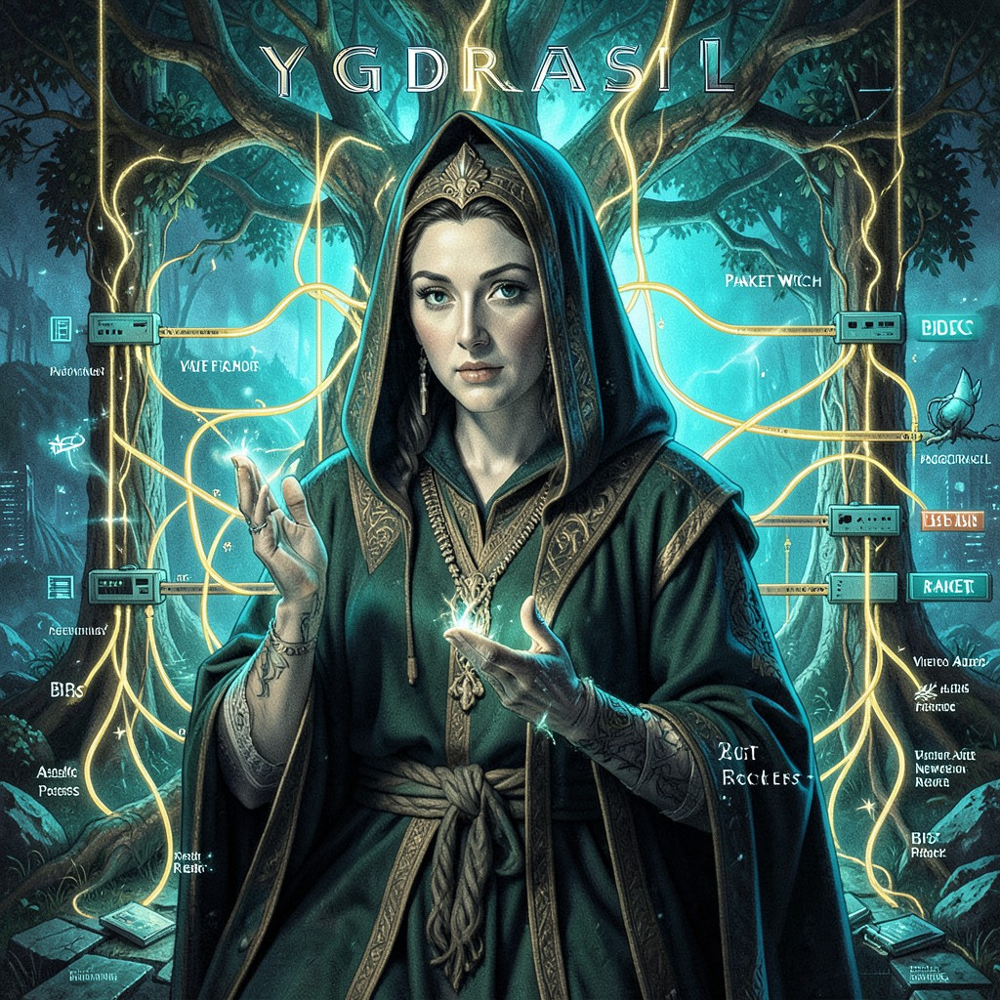

PACKET WITCH
NETWORK ROUTER • PACKETS CARRY SOULS • I ROUTE THEM
|
 PACKET WITCH • VA
|
ESSENTIAL DATATrue Name: [ENCRYPTED] Handle: Faction: Virtual Adepts Rank: Backbone Operator Digital Web Coordinates: AS64512 (Private AS) Status: ACTIVE • ROUTING |
ATTRIBUTES
| Physical | Social | Mental |
|---|---|---|
| Strength: 2 | Charisma: 3 | Perception: 4 |
| Dexterity: 4 | Manipulation: 3 | Intelligence: 4 |
| Stamina: 3 | Appearance: 3 | Wits: 4 |
ABILITIES
| Talents | Skills | Knowledges |
|---|---|---|
| Alertness 4 | Computer 5 | Network Engineering 5 |
| Enlightenment 3 | Security Systems 4 | BGP/OSPF 5 |
| Electronics 3 | Protocol Design 4 | |
| Cryptography 3 | ||
| Traffic Analysis 5 |
SPHERES
| Sphere | Rating | Specialty |
|---|---|---|
| Correspondence | ●●●● | Packet Routing, Sympathetic Links |
| Spirit | ●●● | Packet Souls, Digital Umbra Paths |
| Entropy | ●● | Congestion Control, Jitter Magic |
| Prime | ●● | Bandwidth Quintessence |
BACKGROUNDS
- Node: ●●●● (Tier-1 Backbone)
- Contacts: ●●● (IXP Operators, NOCs)
- Rank: ●●● (Senior Network Engineer)
- Artifact: ●●● (Core Router: "YGGDRASIL")
- Sanctum: ●●● (Network Operations Center)
MERITS & FLAWS
| Merits | Flaws |
|---|---|
| Network Intuition (3pt) | Offline Anxiety (2pt) |
| Packet Empathy (3pt) | DDoS Magnet (3pt) |
| Route Optimization (2pt) | Paradox in Transit (2pt) |
PERSONAL HISTORY
Packet Witch was a network engineer at MAE-EAST when she Awakened during a routing table explosion. She saw the packets not as data—but as prayers. Every HTTP request, every DNS query, every ping: a soul reaching out across the void. She routes them with care.
Her core router, "YGGDRASIL," runs a custom OS she wrote. It doesn't just forward packets—it blesses them. Latency drops 13% on her paths. Packet loss approaches zero. The Technocracy's crawlers avoid her ASN entirely; they can't explain the "anomalous routing efficiency."
She believes the Digital Web's ley lines are BGP routes. The Router Astrosoma is her patron. She leaves offerings: perfect BGP updates, zero packet loss hours, symmetric routes.
CURRENT AGENDA
- Expand YGGDRASIL's peering to cover 90% of the Digital Web
- Detect and route around Technocracy surveillance taps
- Develop "Soul-Aware BGP": packets with intent get priority
- Teach Navigator Sato that packets = prayers (She already knows)
RELATIONSHIP MAP
| NPC | Relationship | Notes |
|---|---|---|
| The Webspinner | Patron Deity | Packet Witch routes the Webspinner's fragments. Sacred duty. |
| Root | Local Admin | Root handles / (local). Packet Witch handles the network. |
| Navigator Hana Sato | Kindred Spirit | Void Engineer. Routes ships like Packet Witch routes packets. |
| Analyst Priya Patel | Frustrating Rival | NWO crawler. Can't crawl Packet Witch's paths. Drives Patel crazy. |
DIGITAL WEB COORDINATES
- Primary Node:
va.packet_witch.yggdrasil.as64512 - Looking Glass:
lg.packetwitch.va(Public route view) - Peering:
peering@packetwitch.va(Encrypted) - Onion Mirror:
packetwitchx9k3m.onion(Tor)